图5-48
电子表格程序，如微软Excel和苹果的Numbers程序，可以让你用与其他工具不同的方法来执行数学计算以及处理数据。它不仅可以节省时间，还可以让你看到趋势和预测的变化。
[此书 分 享微 信jnztxy]最重要的是，你可以在你的演示文稿中插入图形和图表，甚至可以打印出来与他人分享。
如果你的计算机没有安装电子表格程序软件，网上可以免费下载安装。
这个入门版将向你展示一些基本的电子表格形式。这个程序的命令和功能使用的是微软Excel风格，大多数电子表格都用这种风格。（有关特定命令信息，请参阅应用程序的帮助选项。）
电子表格入门
■打开一个新的电子表格文件，你会看到列和行被称为单元格的框，如图5-46所示。你可以在每个单元格中输入数字、字母和其他数据。
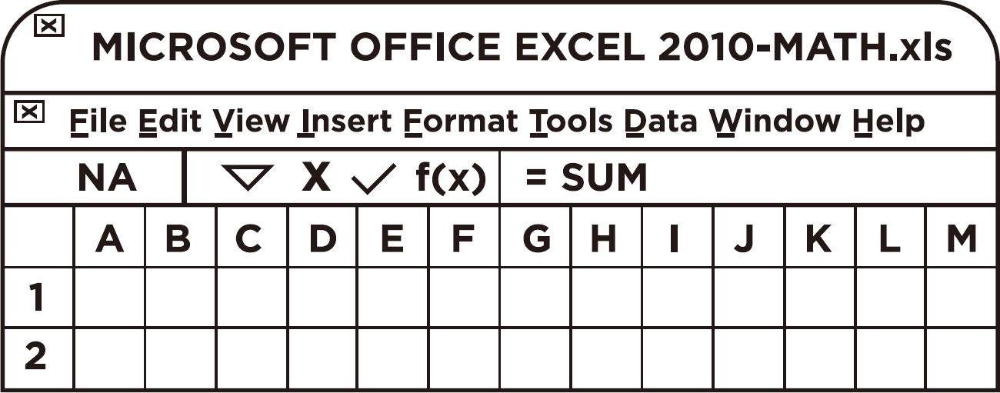
图5-46
对于数学函数，Excel将等号（＝）识别为在数字或数据上执行的操作。如果单元格的内容不以等号（＝）开头，则数据可以被视为一个标签（不是用于计算的数字）。
这里有一个更实际的例子：在单元格A1和A2中输入任何你想输入的数字。在单元格A3中，输入＝SUM（A1＋A2）并按回车键，如图5-47所示。
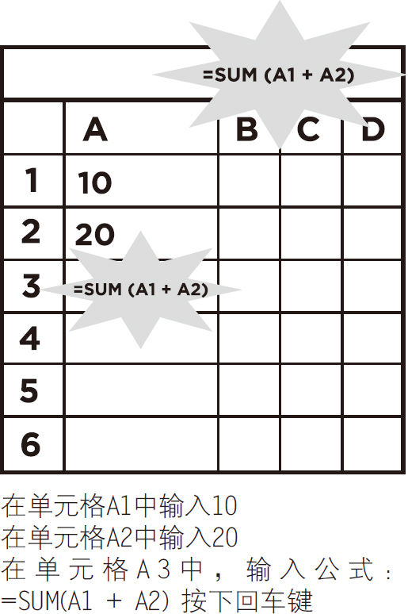
图5-47
单元格A3将显示上面单元格中的数字总和，见图5-48。
图5-48
你可以通过使用如下命令，在列和行中添加更多的数字。单元格A10类型：＝SUM（A1:A9），然后按回车键把从A1到A9所有的数字相加。
注意：在某些情况下，Excel执行从左到右的计算，你必须将数字放在括号内以防止计算顺序出现错误。
例如，命令＝1000-100*5可以得到4500或500的答案。［1000减去100＝900，乘以5等于4500；或1000减去（100乘以5），等于500］。
你将以以下两种方式之一输入该命令：
（1000–100）*5 或1000–（100*5）
■从函数菜单访问Excel提供了更多的内置函数，如图5-49所示。
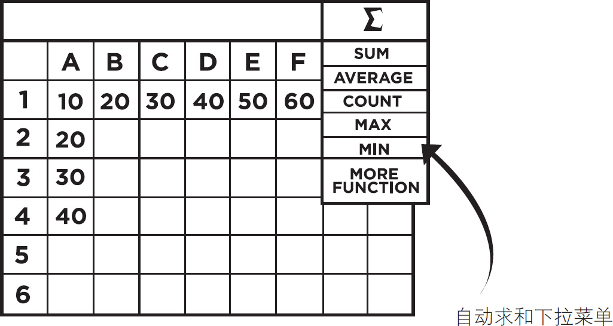
图5-49
统计函数允许你从某个值的列表中获取信息，并确定平均值（平均值）、中位数（中间）、众数（最频繁）和标准偏差（一组的距离），见图5-50、图5-51和图5-52。
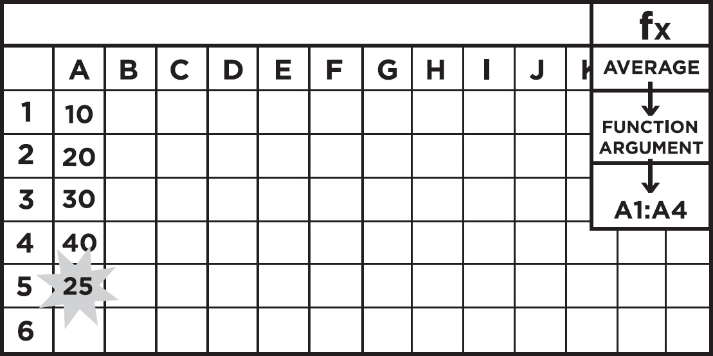
图5-50
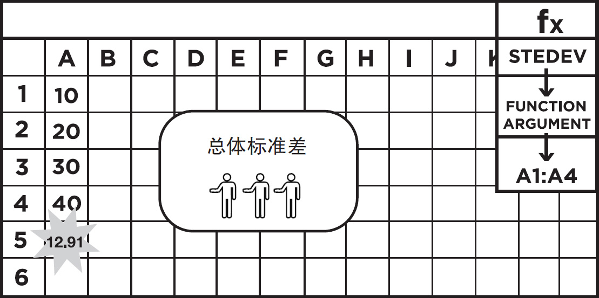
图5-51
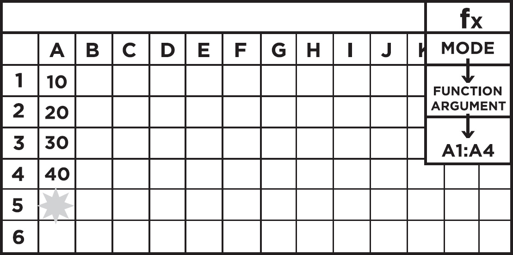
图5-52
■此外，你还可以在电子表格中插入图形，并添加图表使你的演示文稿更具吸引力，见图5-53和图5-54。
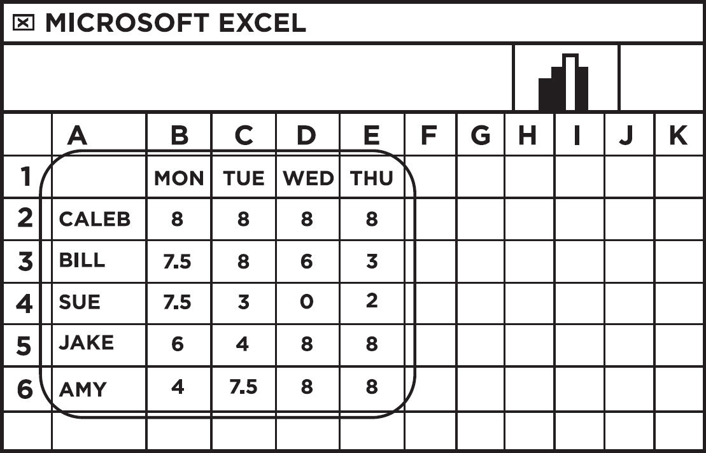
图5-53
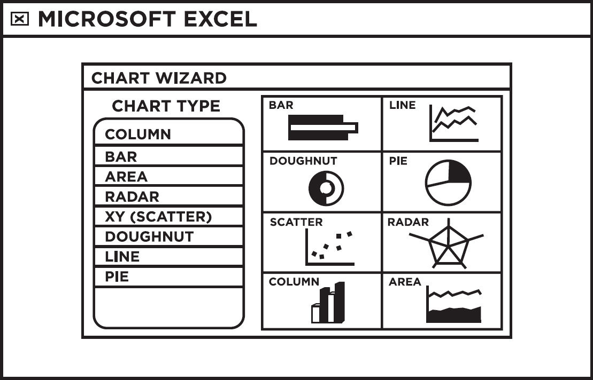
图5-54
■键盘上的快捷键有很多。它们允许你选择一组单元格，指定一个命令，或者为你创建一个公式！
■在使用基本命令和函数之后，研究一下电子表格手册和教程，你会发现更多的功能，包括文本和数据函数、日期和时间、数学和三角函数，以及三维统计分析：
►财务公式计算利息，估值、贷款。
►计算器，假设分析，回归分析。
这本书展示了一些实验，它们让数学变得难忘，有趣且易于分享。甚至你可以通过制作更多的DIY项目来激发学习兴趣。
下面的几个例子是你日常生活中可以做的设计：
■制作这本书中出现的数学小测验的巨型版本，并把它们挂在墙上。
■反复温习指导书，特别是不寻常的符号和公式，制作大的、动态的数学符号海报，把它们贴在你的墙上，见图5-55。

图5-55
■从正式学习中休息一下，玩玩图5-56中像“函数轮”这样的数学策略游戏。
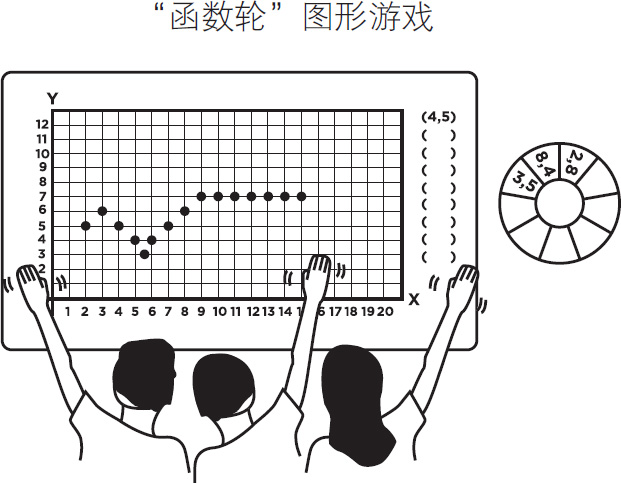
图5-56
■廉价的塑料披风、浴帘，如图5-57和图5-58所示。

|
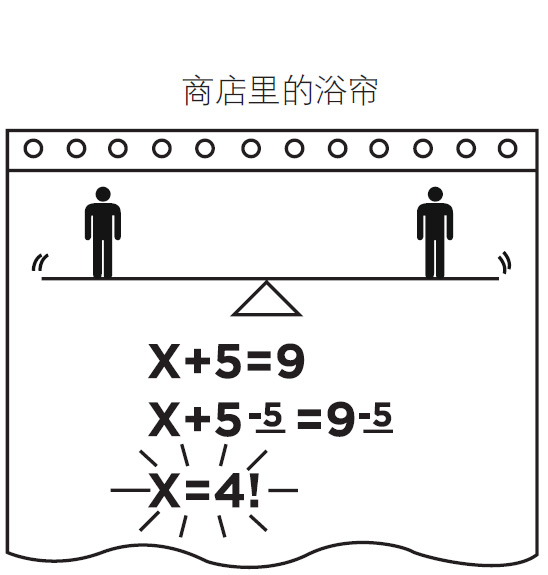 |
| 图5-57 | 图5-58 |
■废弃的饼干盒可以制作成滑动代数函数的演示装置，见图5-59和图5-60。
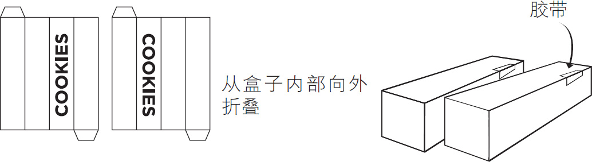
图5-59
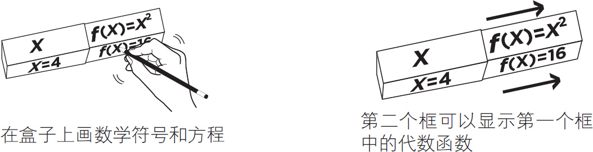
图5-60
■不要将你的数学卡片放在抽屉里视而不见。制作一个数学卡片盒：将饼干盒从里面翻出来，重新折叠它，将它们粘在一起，然后切开切口，这样就可以制作成前后滑动的数学卡片，见图5-61。
■如果你精心制作了π杯，制作了滑动代数函数演示装置和一个奇妙的数学卡片盒，将它们与魔术贴（或磁带）放在一起，制作一个移动的秘密数学机器人，如图5-62所示。
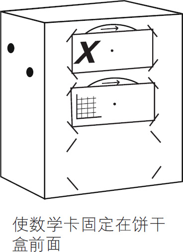
图5-61

图5-62